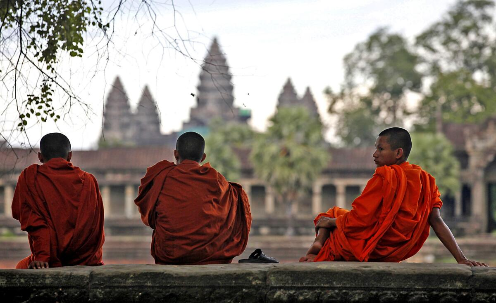
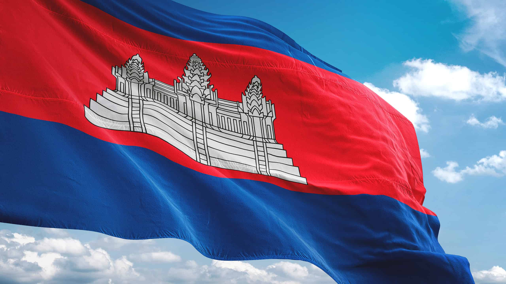
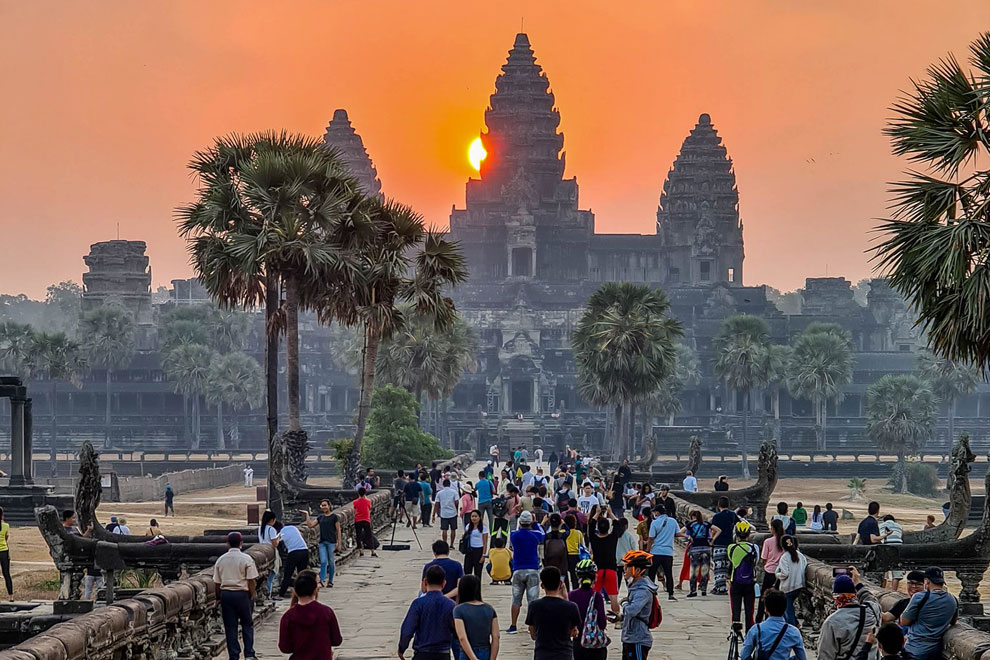
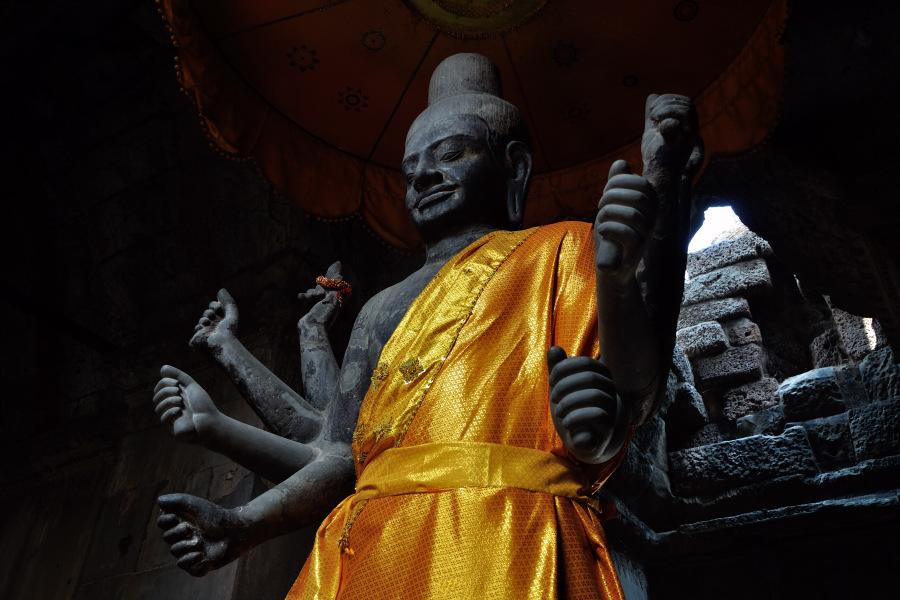
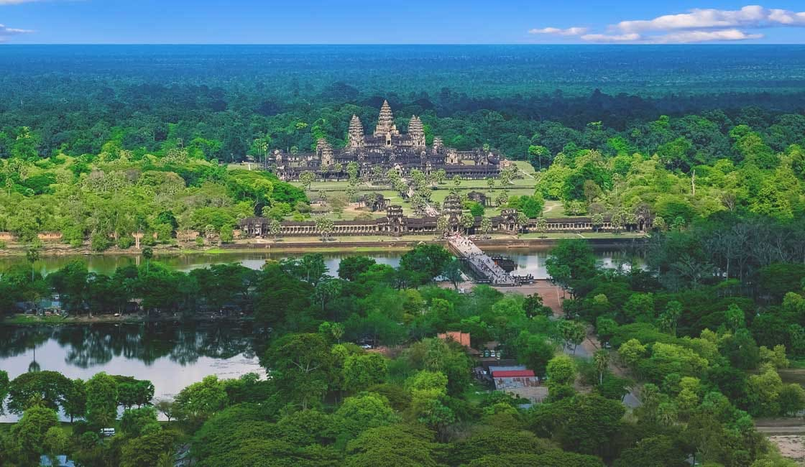
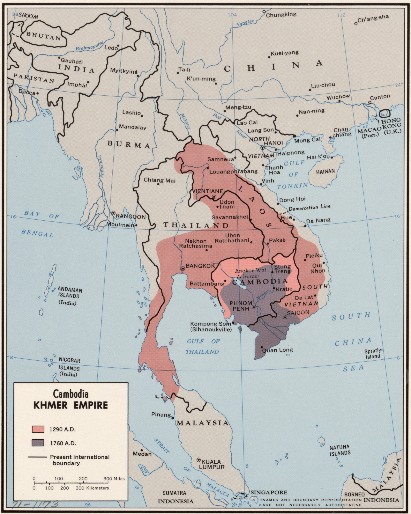

ប្រាសាទអង្គរវត្ត
ត្រឡប់ក្រោយ
អង្គរវត្ត ឬប្រាសាទអង្គរតូច មានទីតាំងស្ថិតនៅភាគខាងជើងនៃក្រុងសៀមរាប នៃខេត្តសៀមរាប ដែលមានចម្ងាយ ៧គីឡូម៉ែត្រពីទីរួមខេត្តសៀមរាប តាមផ្លូវកូម៉ៃ ឬផ្លូវសាលដឺ ហ្គោល។ ប្រាសាទដែលមានប្រជាប្រិយជាងគេក្នុងប្រទេសកម្ពុជានេះ ត្រូវបានគេស្គាល់ថាជាប្រាសាទព្រហ្មញ្ញសាសនាដ៏ធំបំផុត បានកសាងដើម្បីឧទ្ទិសដល់ព្រះវិស្ណុ ក្រោមស្នាដៃ ព្រះបាទសូរ្យវរ្ម័នទី២ នៅដើមសតវត្សទី១២ ដែលស្ថិតនៅក្នុងរាជធានីយសោធរបុរៈ(សម័យបច្ចុប្បន្នអង្គរ)។ ... ប្រាសាទអង្គរវត្តបានក្លាយជានិមិត្តរូប និងជារូបភាពតំណាងប្រទេសកម្ពុជា ហើយក៏ជាប្រាសាទមួយរួមចំណែកក្នុងការទាក់ទាញភ្ញៀវទេសចរជាតិ និងអន្តរជាតិដែរ។ ប្រាសាទមួយនេះ ត្រូវបានរចនាឡើង ដើម្បីតំណាងភ្នំព្រះសុមេរុ ដែលជាទីលំនៅរបស់អទិទេព និងទេវតាក្នុងទេវកថាហិណ្ឌូ ដែលមានកសិណ ឬគូទឹកព័ទ្ធជុំវិញប្រហែលជា 16គីឡូម៉ែត្រ។ ចំណែកកសិណពិតប្រាកដរបស់ប្រាសាទ មានបណ្ដោយប្រវែង 1500មែត្រ x ទទឹង1300ម៉ែត្រ លើ២០០ម៉ែត្រ ផ្លូវធំដើរចូលពីទិសខាងលិចទៅដល់ប្រាសាទកណ្តាលមានប្រវែង ២៥០ម៉ែត្រ ឯកំពូលកណ្ដាលខ្ពស់ធំជាងគេបំផុតរបស់នគរវត្ដ មានកម្ពស់ ៦៥ម និងជញ្ជាំងខាងក្រៅ៣,៦ សហាតិមាត្រ (២,២ ម៉ៃ.)វែងគឺជាថែវមានបីជ្រុង ដែលថែវនីមួយៗឡើងខ្ពស់ទៅថែវដែលជាប់គ្នា ។ នៅចំកណ្ដាលនៃប្រាសាទបញ្ឈរនូវជួរចតុរង្គនៃប៉ម។ មិនដូចប្រាសាទនៅតំបន់អង្គរភាគច្រើនទេ អង្គរវត្តបែរមុខទៅទិសខាងលិច តាមការស្រាវជ្រាវរបស់អ្នកសិក្សាបានវែកញែកថាជាចំណុចសំខាន់នៃប្រាសាទនេះ។ ប្រាសាទនេះត្រូវបានគេកោតសរសើរដោយសារភាពសម្បើមនិងរុងរឿងនៃស្ថាបត្យកម្មនេះ ចម្លាក់ដែលលាតសន្ធឹង និងដោយសារពពួកទេវតាដែលតាក់តែងលើជញ្ជាំងប្រាសាទ។ ក្នុងឆ្នាំ២០១៩ នារដូវប្រាំង នៅចន្លោះថ្ងៃទី ២០ ទៅ ២២ ខែមិនា និង សមរាត្រីរដូវវស្សា ចន្លោះថ្ងៃទី២១ ទៅ ២៣ ខែកញ្ញា នេះ មានបាតុភូតព្រះអាទិត្យរះចំកណ្ដាលកំពូលប្រាសាទអង្គរវត្តនេះ ស្ដែងអោយឃើញពីភាពអច្ឆរិយនៃប្រាសាទអង្គរវត្ត ដែលបុព្វបុរសខ្មែរកសាងឡើង ដោយបានគិតគូរអំពីសំណង់ស្ថាបត្យកម្ម និងបានផ្សាភ្ជាប់ជាមួយធម្មជាតិយ៉ាងច្បាស់លាស់ ដ៏គួរអោយស្ងប់ស្ញែងទៀតផង។
អានបន្ត...រឿងរ៉ាវដែលអ្នកត្រូរដឹងអំពីប្រាសាទអង្គរវត្ត!
- ១. ជាទីបូជនីយដ្ឋានខាងសាសនាធំជាងគេបំផុតលើពិភពលោក
- ២. ការបង្ហាញខ្លួនលើទង់ជាតិ
- ៣. ជាសម្បត្ដិបេតិកភណ្ឌពិភពលោក
- ៤. បុព្វហេតុសាសនា
- ៥. លក្ខណៈពិសេសខុសពីប្រាសាទនានា
- ៦. អង្គររុងរឿងពេលដែលអឺរ៉ុបកំពុងដុនដាប
- អានលម្អិត
១. ជាបូជនីយដ្ឋានសាសនាធំជាងគេបំផុតលើលោក
យោងតាមកំណត់ត្រាហ្គីនណេសពិភពលោក (Guinness World Record) ប្រាសាទអង្គរវត្ដត្រូវបានចាត់ទុកជាទីបូជនីយដ្ឋានខាងសាសនាធំជាងគេបំផុតក្នុងពិភពលោកបើប្រៀបធៀបនឹងប្រាសាទបុរាណជាច្រើនទៀតនៃប្រទេសផ្សេងៗ។ វាលាតសន្ធឹងលើផ្ទៃដី២៤,៨ គ.ម. ជាមួយនឹងផ្ទៃក្រឡា ១.៦២៦.០០០ ម៉ែត្រការេ។ ប្រាសាទអង្គរវត្តត្រូវបានរកឃើញឡើងវិញដោយ ធម្មជាតិវិទូបារាំងលោក ហង់ហ្រ៊ី មូហ៊ូត (Henri Mouhot) នៅឆ្នាំ១៨៦០។
២. ការបង្ហាញខ្លួនលើទង់ជាតិ
រូបប្រាសាទអង្គរវត្ដដែលស្ថិតនៅចំកណ្ដាលនៃទង់ជាតិប្រទេសកម្ពុជាត្រូវបានបង្ហាញរូបរាងក្នុងឆ្នាំ១៨៥០ ប្រហែលជាក្នុងអំឡុងពេលដែលកម្ពុជាស្ថិតក្រោមសម័យអាណាព្យាបាលបារាំង។
៣. ជាសម្បត្ដិបេតិកភណ្ឌពិភពលោក
ប្រាសាទអង្គរវត្តត្រូវបានបញ្ចូលទៅក្នុងបញ្ជីបេតិកភណ្ឌពិភពលោករបស់អង្គការយូណេស្កូ (UNESCO) នៅឆ្នាំ១៩៩២។
៤. បុព្វហេតុសាសនា
ប្រាសាទអង្គរវត្ដសាងសង់ក្នុងរាជ្យកាលព្រះបាទសូរ្យវរ្ម័នទី២ក្នុងគោលបំណងឧទ្ទិសដល់សាសនាហិណ្ឌូគណៈព្រះវិស្ណុ។ ក្រោយមកដោយសារការផ្លាស់ប្ដូរសាសនាក្នុងសម័យព្រះរាជាក្រោយៗ ទើបប្រាសាទមួយនេះមានលក្ខណៈពុទ្ធសាសនាវិញ។
៥. លក្ខណៈពិសេសខុសពីប្រាសាទនានា
ចំណុចដែលធ្វើឱ្យប្រាសាទមួយនេះកាន់តែគួរឱ្យចាប់អារម្មណ៍នោះគឺការបែរមុខទៅរកទិសខាងលិច ខុសពីប្រាសាទនានាដែលបែរមុខទៅទិសខាងកើត។ ការបែរទៅទិសខាងលិចនេះដោយយោងតាមមូលហេតុដូចជា៖ វាជាផ្នូររបស់ព្រះបាទសូរ្យវរ្ម័នទី២ និងការគោរពបូជាព្រះវិស្ណុជាដើម។
៦. អង្គររុងរឿងពេលដែលអឺរ៉ុបកំពុងដុនដាប
ក្នុងអំឡុងចន្លោះសតវត្សទី៩និងទី១០ជាពេលដែលអឺរ៉ុបកំពុងធ្លាក់ចុះដុនដាបក្នុងយុគងងឹត តែប្រទេសក្នុងតំបន់អាស៊ីអាគ្នេយ៍វិញ ជាពិសេសប្រទេសកម្ពុជាកំពុងស្ថិតក្នុងភាពរុងរឿងខ្លាំង នោះគឺសម័យអាណាចក្រខ្មែរ។